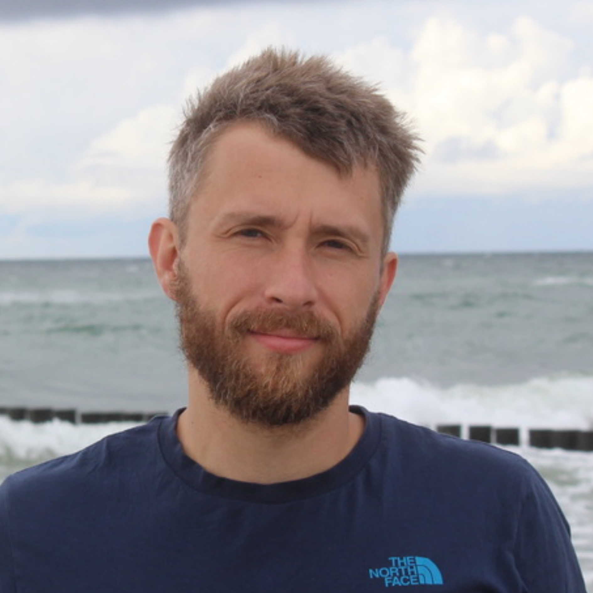

|  | SEISMOLOGIST at Freie Universität Berlin Applied and Earthquake Seismology Geophysics Section Institut of Geological Sciences E-mail: jonas.folesky[at]geophysik.fu-berlin.de ORCID: 0000-0002-7729-9624 |
RESEARCH INTERESTS My scientific research is primarily focused on understanding earthquake source processes. Specifically, I apply techniques to analyze source parameters such as source size, rupture velocity, directvity, complexity or stress drop. LATEST NEWS November 2024 Our new paper has been published in BSSA: Time-Dependent Stress Drop Variations After Large Earthquakes Along the North Chilean Megathrust. See my publications. July 2024 Congratulations to Sarah Knippel for successfully defending her Bachelors Thesis on "Spectral depletion at repeated ruptures observed in repeating earthquakes in northern Chile". June 2024 Congratulations to David Lube for successfully defending his Bachelors Thesis on "Waveform similarity based earthquake cluster analysis in northern Chile" (link). May 2024 A new paper has been published in Scientific Reports: Different earthquake nucleation conditions revealed by stress drop and b-value mapping in the northern Chilean subduction zone. See my publications. March 2024 My DFG Project - Slip heterogeneity of a subduction zone from detailed repeating earthquake analysis. A 15–year–long story from northern Chile. - starts. It is supposed to run until February 2027. A description can be found by clicking the link. (link) January 2024 My DFG Project - Inferring heterogeneity of fault properties and stress state of a megathrust fault from dynamic stress drop variations: A feasibility study in the northern Chilean subduction zone. - is ending. I will start a new project in March24. (link) January 2024 Our paper on stress drop mapping in northern Chile has been published in JGR. See my publications.